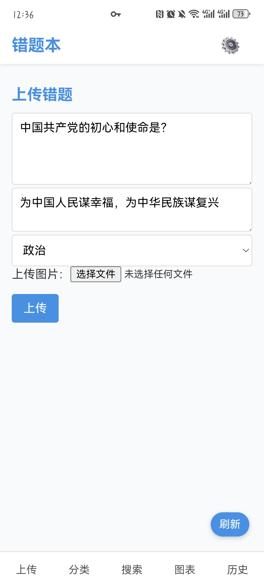
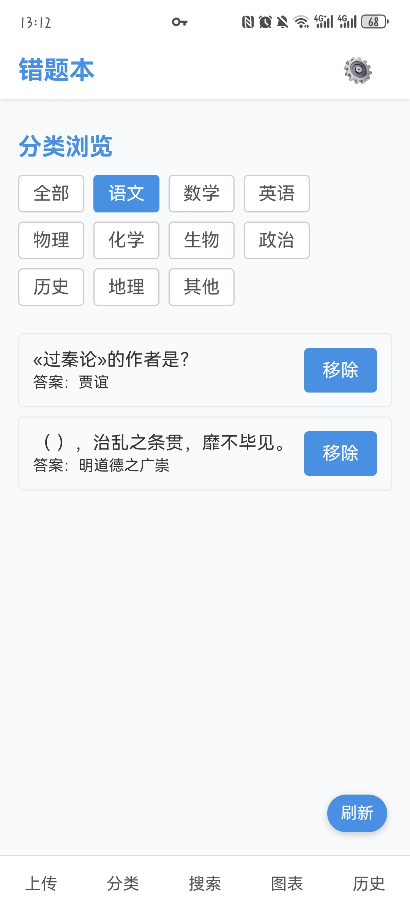
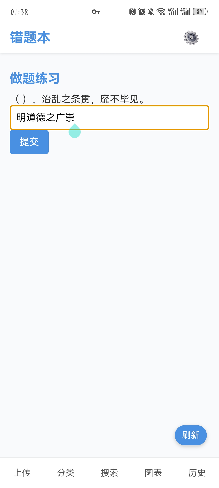
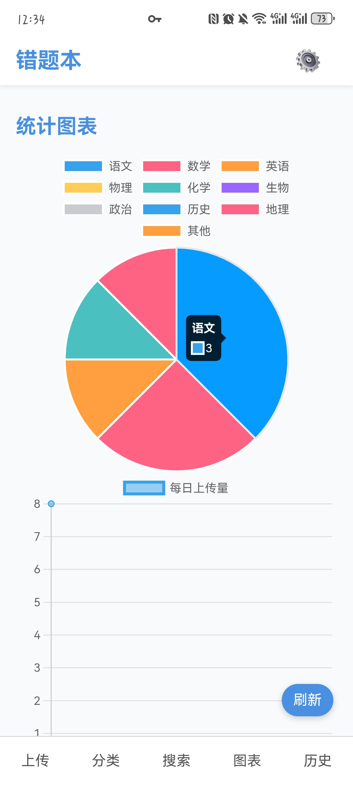

返回首页
错题本使用指南 📚
目录导航
上传错题
分类管理
做题练习
数据统计
📤 1. 上传错题
点击底部导航栏的「上传」按钮
填写题目内容和正确答案
选择对应的学科分类
（可选）上传题目图片
点击上传按钮完成操作
💡 小贴士：本地部署端点击图片上传区域可以选择图片上传 😭 目前代理网页端由于服务器本身缘故暂不支持图片上传

🗂 2. 分类管理

点击底部导航栏的「分类」按钮
选择需要查看的学科分类
点击题目卡片查看详细内容
使用右侧按钮移除不需要的题目
点击「开始练习」进入做题模式
💡 点击底部导航栏「搜索」按钮可以搜索对应题目
📝 3. 做题练习
在分类页面点击「开始做题」
阅读题目内容（支持图片展示）
在输入框填写你的答案
点击提交查看结果
使用「跳过」按钮暂时跳过难题
💡 连续答对3次（可设置）的题目会自动归档删除

📊 4. 数据统计

点击底部导航栏的「图表」按钮
查看上传学科分布的饼状图
分析上传题量趋势的折线图
直观了解自身学习情况
上下滑动阅览不同图表
💡 每日学习数据会自动同步到本地
返回首页
🎉 现在就开始整理你的错题吧！